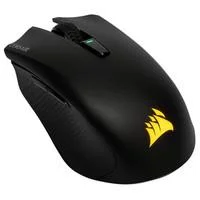

Mouse Gamer Corsair Harpoon Wireless, RGB, 6 Botões, 10000DPI, Preto - CH-9311011-NA


R$ 4.999,00
mensagem teste
DESCRICAO DO PRODUTO
O mouse para jogos CORSAIR HARPOON RGB WIRELESS oferece várias opções para você jogar, com a facilidade de se conectar ao seu PC usando a TECNOLOGIA SLIPSTREAM WIRELESS CORSAIR ultrarrápida de menos de 1 ms, Bluetooth ou USB. Compatível com iCUE da CORSAIR.Especificacoes
Características
- Marca: Corsair - Modelo: CH-9311011-NA Especificações: - Botões Programáveis: 6 - DPI 10.000 DPI - Sensor PMW3325 - Tipo de sensor: Óptico - Retroiluminação do Mouse: 1 zona RGB - On board Memory - Tipo de botão do mouse: Omron - Conectividade: Sem fio ou com fio - Durabilidade do botão do mouse: 50 M L / R Clique - Tipo de aperto: Garra - Software CUE: Suportado no iCUE - Cabo Borracha livre de Emaranhado de 1.8m - Tipo de jogo: FPS, MOBA - Taxa de relatório: 1000Hz selecionável / 500Hz / 250Hz / 125Hz Bateria: - Tipo: Lítio-Polímero Recarregável Tempo de Uso: - 2.4GHz SLIPSTREAM: Até 30 horas com iluminação padrão ou 45 horas com iluminação desligada - Bluetooth: até 40 horas com iluminação padrão ou 60 horas com iluminação desligada Compatibilidade: - PC com porta USB 2.0 - Windows 10, Windows 8 ou Windows 7 - É necessária uma conexão com a Internet para baixar o software Corsair Utility Engine - Windows 8 ou 10 necessário para conectividade Bluetooth - Suporte a iCUE disponível via modo com fio sem fio de 2,4 GHz ou USB Conteúdo da Embalagem: - Mouse Gamer Wireless RGB Harpoon - Cabo USB para Carregamento e de dados - Transceptor USB sem fio (dongle) - Guia rápido - Folheto de Segurança - Cartão de garantia Garantia: 1 ano de garantia (3 meses de garantia legal + 9 meses de garantia contratual junto ao fabricante) Peso: 210 gramas (bruto com embalagem)